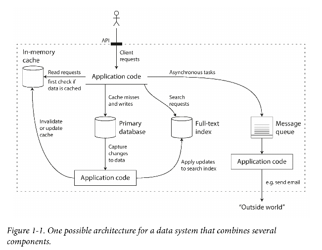

Designing Data-Intensive Applications
Table of Contents
1 Overviews
Many applications today are data-intensive, as opposed to compute-intensive.
1.1 Functionalities
- Store data (databases)
- Remember the result of an expensive operation (caches)
- Allow users to search data by filter (search indexes)
- Send a message to another process, to be handled asynchronously (stream processing)
- Periodically crunch a large amount of accumulated data (batch processing)
1.2 Questions
- How do you ensure that the data remains correct and complete?
- How do you provide consistently good performance to clients?
- How do you scale to handle an increase in load?
- What does a good API for the service look like?
1.3 Factors Influence the Design
- Skills and experience of the people involved
- Legacy system dependencies
- The timescale for delivery
- Organization's tolerance of different kinds of risk
- Regulatory constraints
1.4 Reliability
The system should continue to work correctly (performing the correct function at the desired level of performance) even in the face of adversity (hardware or software faults, and even human error).
Fault vs. Failure
- Fault
- Fault is defined as one component of the system deviating from its spec.
- Failure
- Failure is when the system as a whole stops providing the required service to the user.
Hardware Faults
- Add redundancy to reduce the failure rate.
- A single-server system requires planned downtime if you need to reboot the machine (to apply operating system security patches, for example).
- Multi-machine redundancy was only required by a small number of applications for which high availability was absolutely essential.
- Hardware faults are thought of random and independent from each other.
- Tolerate the loss of entire machines, by using software fault-tolerance techniques in preference.
Software Errors
- Systematic errors tend to cause many more system failures than uncorrelated hardware faults.
- Examples of systematic errors:
- A software bug that causes every instance of an application server to crash when given a particular bad input.
- A runaway process that uses up some shared resource.
- A service that the system depends on that slows down, becomes unresponsive, or starts returning corrupted responses.
- Cascading failures, where a small fault in one component triggers a fault in another component, which in turn triggers further faults.
- Solutions
- Carefully thinking about assumptions and interactions in the system
- Thorough Testing
- Process Isolation
- Allowing processes to crash and restart
- Measuring, monitoring, and analyzing system behavior in production
Human Errors
Approaches to deal with unreliable humans
- Well-designed abstractions, APIs and admin interfaces
- Decouple the places where people make the most mistakes from the places where they can cause failures.
- Sandbox environments to help explore and experiment safely using real data.
- Test thoroughly at all levels, from unit tests to whole-system integration tests and manual tests.
- Allow quick and easy recovery from human errors.
- Set up detailed and clear monitoring, such as performance metrics and error rates.
- Implement good management practices and training
1.5 Scalability
As the system grows (in data volume, traffic volume, or complexity), there should be reasonable ways of dealing with that growth.
Describing Load
Load parameter Example:
- Requests per second
- The ratio of reads to writes in a database
- The hit rate on a cache
- The number of simultaneously active users in a chat room
- Twitter: The distribution of followers per user (maybe weighted by how often those users tweet) is a key load parameter for discussing scalability, since it determines the fan-out load.
Describing Performance
- Look at it in two ways
- When you increase a load parameter and keep the system resources unchanged, how is the performance of your system affected?
- When you increase a load parameter, how much do you need to increase the resources if you want to keep performance unchanged?
- Performance Examples
- Throughput
- The number of records we can process per second, or the total time it takes to run a job on a dataset of a certain size. (Important for batch processing system)
- Response Time
- The time between a client sending a request and receiving a response. (Important for online systems)
- Latency
- Latency is the duration that a request is waiting to be handled—during which it is latent, awaiting service.
- The causes of outliers: context switch, the loss of a network packet, a garbage collection pause, a page fault forcing a read from disk, etc.
- Amazon describes response time requirements for internal services in terms of the 99.9th percentile, even though it only affects 1 in 1,000 requests. This is because the customers with the slowest requests are often those who have the most data on their accounts
- Reducing response times at very high percentiles is difficult because they are easily affected by random events outside of your control, and the benefits are diminishing.
Coping with Load
Recommended Practices
- keep your database on a single node (scale up) until scaling cost or high-availability requirements forced you to make it distributed.
- An architecture that scales well for a particular application is built around assumptions of which operations will be common and which will be rare—the load parameters.
1.6 Maintainability
Over time, many different people will work on the system (engineering and operations, both maintaining current behavior and adapting the system to new use cases), and they should all be able to work on it productively.
1.7 A Simple Architecture

2 Tools
- Redis
- datastore also used as message queue
- Kafka
- message queue with database-like durability guarantees.